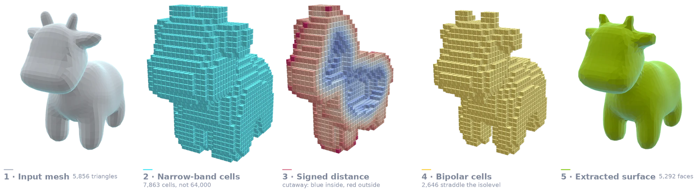
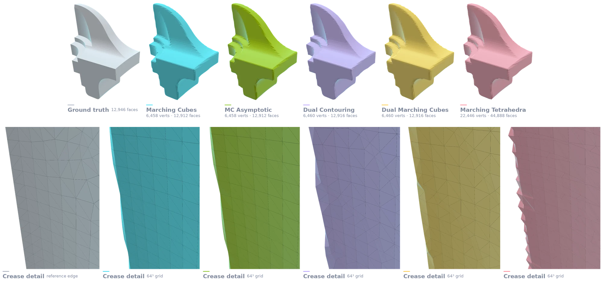
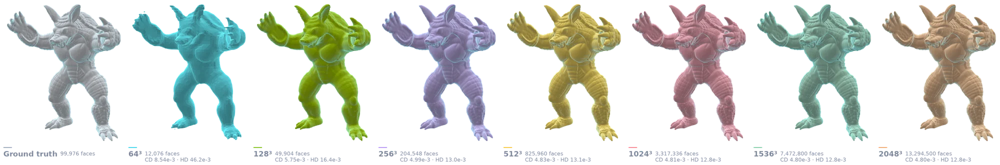
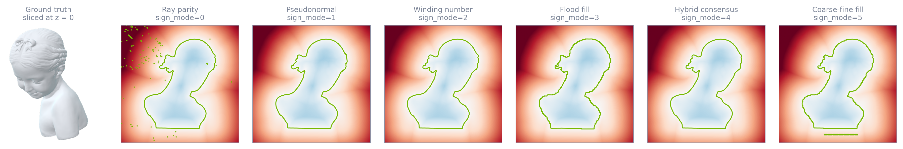
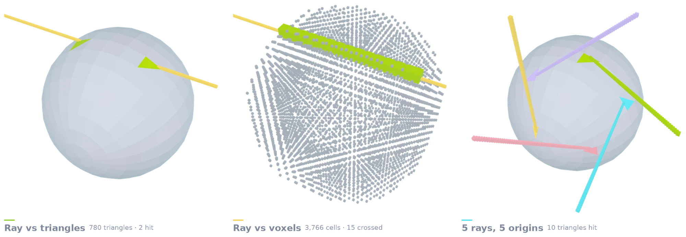
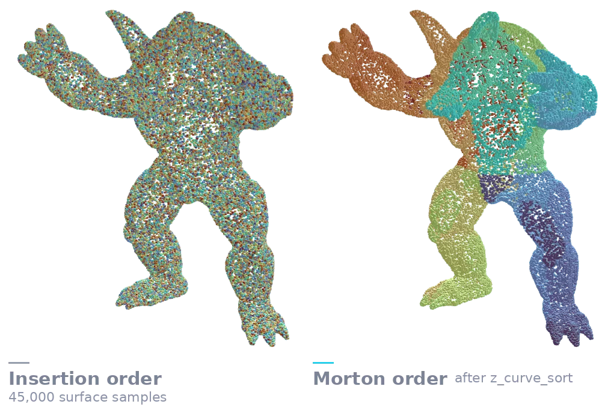
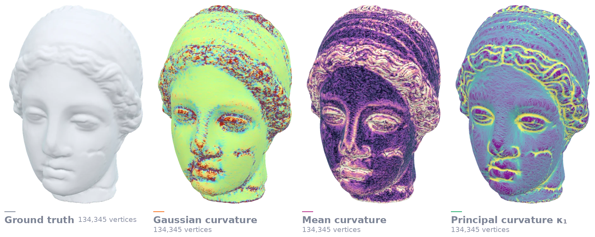
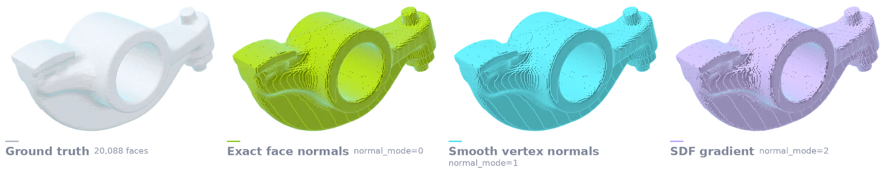
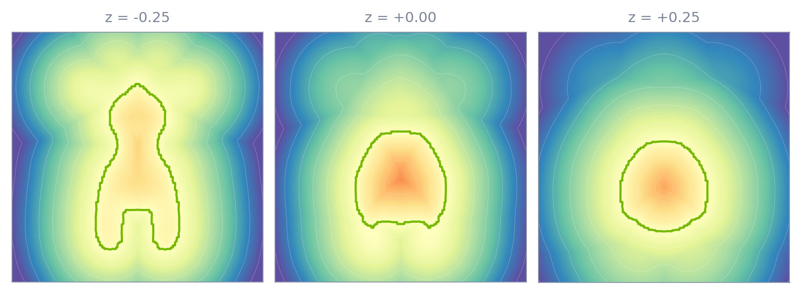

A GPU-native geometry toolbox, built for gradients
Conquer3D implements computational geometry directly in CUDA and exposes it through PyTorch tensors — so meshing, querying and voxelising happen where your data already lives.
Surfaces from fields
Turn any scalar field — an analytic SDF, a network output, distances queried from a mesh — into a watertight, 2-manifold surface. Sharp CAD creases survive when you want them to, and ambiguous cells resolve without pinch points.
Gradients that flow through
Extraction is part of the training step, not a preprocessing stage around it. Where an analytical backward exists, gradients propagate from the mesh back into the field and the colours defined on it.
Built for the memory you have
Narrow-band voxelisation never allocates the dense volume, so a $1024^3$ extraction fits on a single consumer GPU. Spatial hierarchies keep queries cache-coherent instead of chasing pointers.
Everything stays on device
Every operator consumes and produces PyTorch tensors in place. No host round-trip, no format conversion, no copying a mesh back to the CPU just to measure or voxelise it.
What the operators actually produce
Every figure below is real output, generated from the bundled benchmark assets by
docs/_figures/make_figures.py and regenerated whenever the library changes.
Click any figure to enlarge.

From mesh to surface, step by step
The whole extraction, one stage per panel. A triangle mesh goes in; only the cells the surface actually crosses are allocated (7,863 of a possible 64,000 at 40³); each grid vertex is given a distance and a sign; the cells whose corners straddle the isolevel are selected; and those cells are marched into a surface. The third panel is cut away because from outside every visible cell is positive — the sign change only shows through the band.
Sparse grid. The isosurface is extracted from a narrow-band sparse voxel grid built by create_voxel_grid_from_tmesh — only the cells the surface actually crosses are allocated. No dense volume is ever held.

Isosurface Extraction
The source mesh leads, then the same signed distance field meshed five ways. The field is carried on a narrow-band sparse grid — 19,329 of the 262,144 cells a dense 64³ volume would hold, 7.4% — and every extractor consumes that same sparse triple. Marching Cubes and its asymptotic variant round the crease into a staircase; Dual Contouring's QEF solve snaps the vertex onto the feature; Dual Marching Cubes holds manifold topology throughout; Marching Tetrahedra splits each cell into six tetrahedra and emits roughly 3.5× the faces for it. The close crop is placed automatically at the point where MC and DC disagree most, measured with the library's own Chamfer distance.
Sparse grid. The isosurface is extracted from a narrow-band sparse voxel grid built by create_voxel_grid_from_tmesh — only the cells the surface actually crosses are allocated. No dense volume is ever held.

Detail is a resolution dial
Dual Marching Cubes on the Armadillo across seven grid resolutions, against the source mesh. Face count grows from 12,076 to 13,294,500 while the extraction code and the field are unchanged. Each panel reports Chamfer and Hausdorff distance to the original, measured with the library's own metrics on 200,000 area-weighted surface samples: Chamfer falls from 8.54e-3 to 4.80e-3 and Hausdorff from 46.2e-3 to 12.8e-3, both flattening by 512³ — past that the extraction has converged to within the sampling floor of the measurement. Above 1024³ the sign comes from the coarse-fine flood fill, since a dense one at 1536³ would need 13.5 GB.
Sparse grid. The isosurface is extracted from a narrow-band sparse voxel grid built by create_voxel_grid_from_tmesh — only the cells the surface actually crosses are allocated. No dense volume is ever held.

Six ways to decide inside
The source mesh, then one axial slice through it signed by each of the six available modes and contoured at zero. Ray parity misclassifies a scatter of points in the upper left where rays graze the surface; pseudonormals and winding numbers are clean; the flood-fill modes quantise the boundary to their occupancy grid. Most libraries give you exactly one of these.

One ray, two hierarchies
A sphere from create_sphere and a single ray, put to two different accelerators. On the left, MeshBVH.get_ray_intersection walks a hierarchy over the 780 triangles and returns the two the ray actually pierces — entry and exit — out of the whole mesh. On the right, the same ray is traced through the narrow-band voxel grid: BVH.query_ray over the 3,766 cell boxes returns the 15 the ray crosses. Both queries are exact, and neither ever visits the primitives it does not touch — that is the whole point of the hierarchy.
Sparse grid. The voxels traversed here are the narrow band from create_voxel_grid_from_tmesh, not a dense volume.

Sorting for cache locality
45,000 surface samples, coloured by their position in the array rather than by any geometric quantity. In insertion order the colours are noise — neighbouring array entries are scattered across the model, so every traversal is a random memory access. After z_curve_sort the same colouring resolves into coherent regions, because the Morton code interleaves the coordinate bits and places nearby points at nearby addresses. This ordering is what every hierarchy in the library is built on.

Curvature via Laplace–Beltrami operator
Per-vertex curvature over 134,345 vertices of the Igea bust, computed with the cotangent Laplace–Beltrami operator and mixed Voronoi areas, shown beside the unshaded source. Mean curvature and the first principal curvature pick out the eyelids, lips and braid detail that Gaussian curvature alone flattens.

The field Dual Contouring solves against
Dual Contouring is only as sharp as the normals it is given. Against the source mesh: exact CAD face normals produce a clean surface; smooth vertex normals soften it; deriving normals from the SDF gradient introduces the visible speckle that a QEF then faithfully reproduces.
Sparse grid. The isosurface is extracted from a narrow-band sparse voxel grid built by create_voxel_grid_from_tmesh — only the cells the surface actually crosses are allocated. No dense volume is ever held.

The field behind the surface
The source mesh, then three axial slices of the signed distance field around it with the zero level set drawn in green. This is the quantity every extractor in the library consumes — the mesh is just where this field crosses zero.
Install and extract a surface
pip install -U conquer3dPrebuilt CUDA wheels are published per release for Python 3.10–3.14 against PyTorch 2.8 and 2.11. Building from source needs CUDA $\ge$ 12.0.
import torch
from conquer3d.data_structure import create_voxel_grid
from conquer3d.ops import dmc
grid_vertices, voxels, _ = create_voxel_grid(
grid_min=[-1.0] * 3, grid_max=[1.0] * 3,
res=[64, 64, 64], device="cuda",
)
sdf = (torch.norm(grid_vertices, dim=-1) - 0.6).requires_grad_(True)
verts, faces = dmc(grid_vertices, voxels, sdf, iso=0.0)
verts.sum().backward() # gradients flow into the field